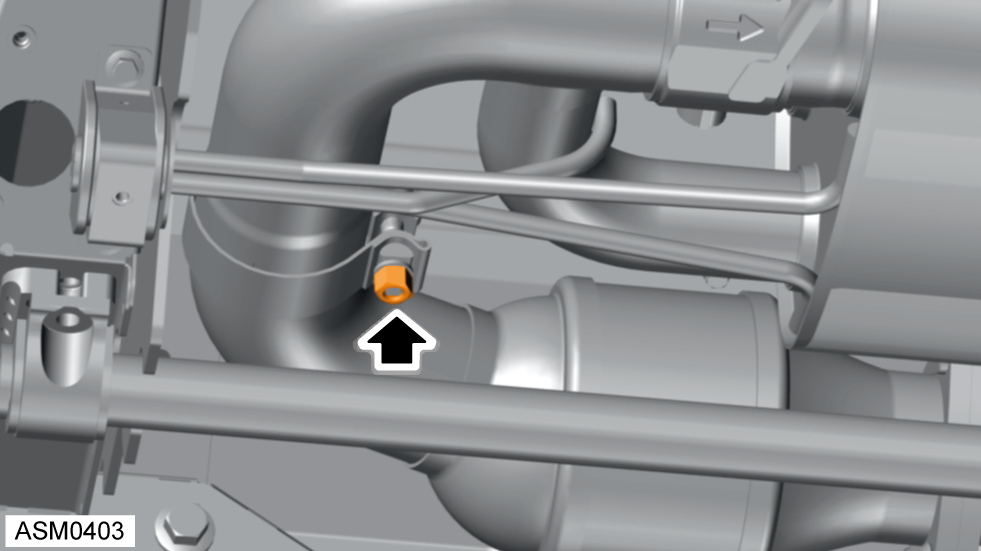
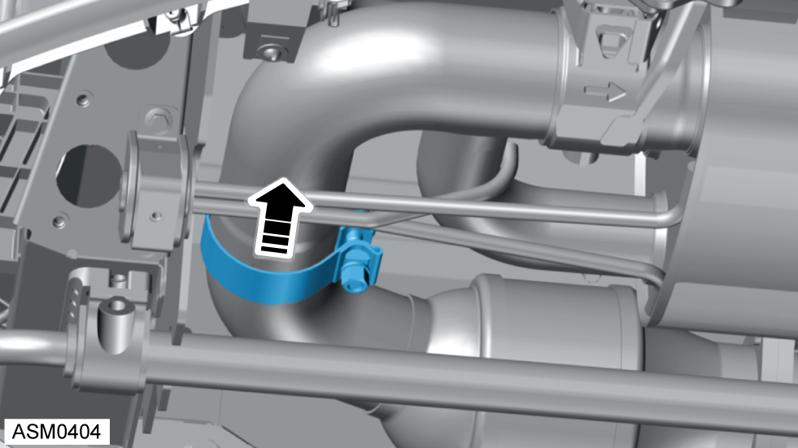

Silencer Assembly - V6
Print
Operation Code: 45.01.03-02
Removal
- Remove rear diffuser. Refer to procedure.
 WARNING: Allow the engine to cool completely before proceeding.
WARNING: Allow the engine to cool completely before proceeding.

- Loosen clamp securing silencer assembly to catalyst. Torque 60 Nm.

- Move clamp on to silencer assembly.
- Remove harness connector from exhaust valve actuator and move aside.
- Remove M8x25 bolts (x2) securing left side exhaust hangers to vehicle. Torque 24 Nm.
- Remove M8x25 bolts (x2) securing right side exhaust hangers to vehicle. Torque 24 Nm.
- Remove exhaust hanger straps (x2) from vehicle.
- Remove silencer assembly.
Do not carry out further disassembly if removing for access only.
- Remove exhaust hanger rubbers (x2) from silencer assembly.
- Remove and discard torca clamp from silencer assembly.
NOTE: It may be necessary to loosen the nut further in order to remove the clamp.
- Remove nuts (x3) and remove valve actuator.
Installation
- Installation is the reverse of removal procedure except for the following:
- Renew discarded torca clamp. Torque 60 Nm.